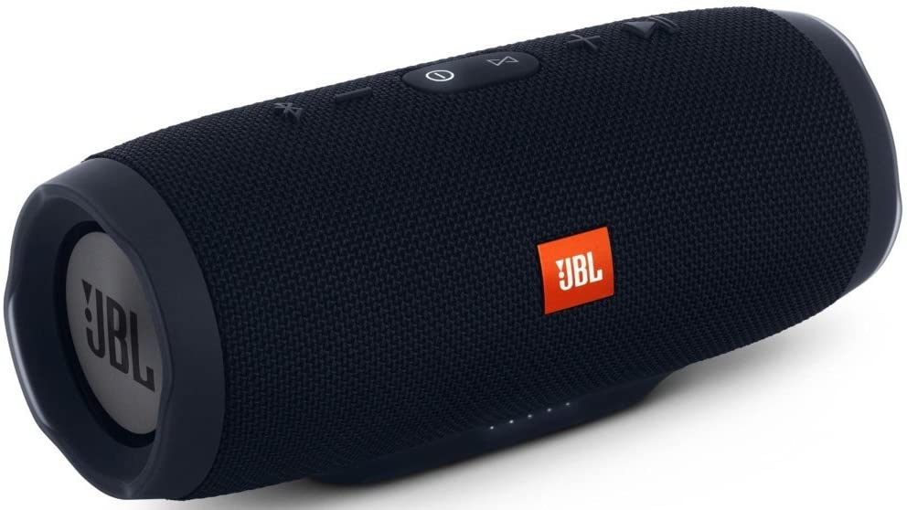

JBL Charge 3: análisis sobre el impacto ambiental del producto y su rediseño
Este producto es un parlante portátil, con bluetooth, micrófono y batería integrada, mejorando la experiencia de los usuarios.
Sus dimensiones son de 88,5x213x87 (mm) y su peso es de aproximadamente 800gr.
Este producto tiene certificado IPX7, el cual avala que el producto puede sumergirse bajo 1 metro de agua por 30 minutos gracias a su método de producción. Dispone de varios botones comando en la parte superior como también varios puertos de entrada en la parte inferior-trasera.